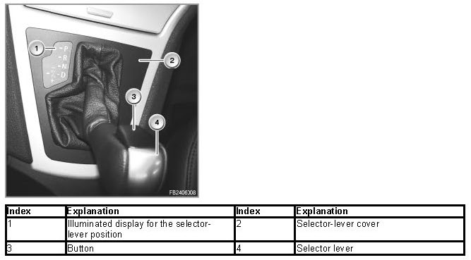
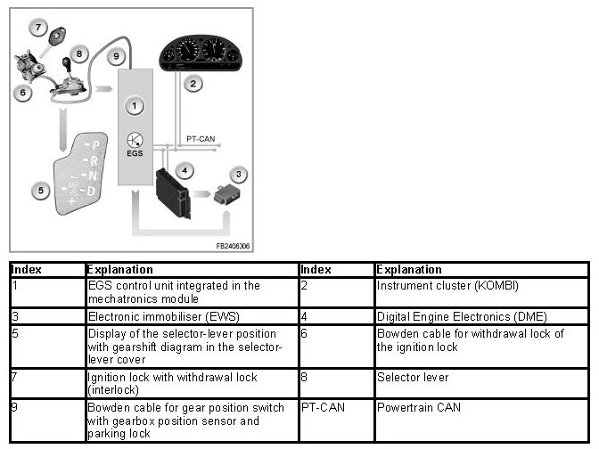
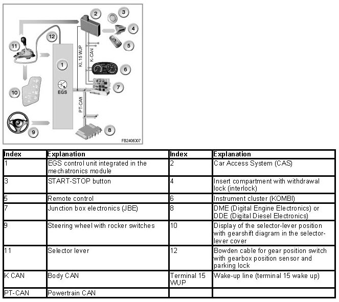

Gear Selector Switch (Gear Lever)
Gear Selector Switch (Gear Lever)
Gear selector switch (gear lever)
The gear selector switch (selector lever) enables the engagement of the individual drive positions or gears (Steptronic). The selector-lever position is transferred to the gearbox by means of a cable. The engaged drive position is shown visually via the shift-indicator illumination.
Vehicles with rocker switches
In addition to the sequential gear selection by means of the selector lever, the gears can also be shifted at the steering wheel with 2 rocker switches (vehicle-specific).
To upshift, briefly pull one of the two rocker switches.
To downshift, briefly press one of the two rocker switches.
Brief description of components
The selector lever is built into the centre console. The selector-lever cover contains the illuminated display for the selector-lever position. The engaged drive position is backlit on the gearshift diagram. The background light is activated by the wiping contact on the selector lever.
An interlock prevents inadvertent shifts to selector-lever positions "R" and "P". To cancel the interlock, press the button on the front of the selector lever knob.

The selector lever has the positions
P for parking: enables starting of the engine
R for reverse gear
N for neutral: enables starting of the engine
Towing the vehicle is only possible in this selector-lever position.
D for drive: automatic mode
Gears are shifted within the framework of the adaptive gearbox control.
M/S "M" for manual operation = Steptronic
or "S"
for Sport program = automatic mode with sporting characteristic curves
- Manual downshifting
+ Manual upshifting
When the selector lever is in the position "M/S", the gearbox is in the automatic mode with sports characteristic curves. The display in the instrument cluster change from "D" to "SD".
If the selector lever is now tilted towards "-" or "+" in the gearshift gutter "M/S", the electronics switch to Steptronic. The sustained manual operation via selector lever or rocker switches becomes active. The display in the instrument cluster changes from "SD" to "M1" to "M6".
In the manual mode, the gearbox control only executes upshifts or downshifts with the matching engine speed and road speed.
Gearshifts that would lead to non-permitted high or low engine speeds are not permitted.
The M/S position is notified to the gearbox control by the Steptronic switch directly via line (signal name: EGS_MGE or EGS_MGA). The Steptronic switch is integrated in the gear selector switch. The selector-lever settings of the Steptronic for shifting the individual gears up and down are notified to the gearbox control directly across a line (signal names: EGS_UP; EGS_Down).
System functions
The following system functions are described:
Parking lock
The parking lock blocks the gearbox output shaft. The vehicle is secured against rolling away. The parking lock is designed in such a way that on upward or downward inclines of up to 32 % a secure hold is always ensured. The parking lock is engaged purely mechanically with the vehicle stationary using the selector lever (Bowden cable from selector lever to the mechatronics module).
Shiftlock (selector lever interlock)
The selector lever is interlocked in the positions "P" and "N" by an electromagnet. The electromagnet is activated by the EGS control unit.
The selector lever interlock is engaged when selector-lever position "P" or "N" is detected and the ignition (terminal 15) is ON.
A position change from selector-lever position "P" or "N" is only possible at a driving speed below 5 kph and when the brake is operated at an engine speed below 2500 rpm.
Interlock (withdrawal lock)
- Vehicles with ignition lock and ignition key (E83)
The ignition lock is mechanically connected to the selector lever via a Bowden cable. The withdrawal lock only permits the ignition key to be removed in selector-lever position "P".
Vice versa, the selector lever can only be moved from selector-lever position "P" when the ignition key is inserted and turned to at least ignition ON.

- Vehicles with insert compartment and remote control
The selector lever is interlocked in the selector-lever position "P" at terminal 15 OFF. If the remote control is not located in the insert compartment, the selector lever is interlocked in position "P".
The electromagnet is supplied with current by the EGS control unit to release the selector lever as of terminal 15. A micro-switch picks up the interlocking or release of the selector lever. The micro-switch sends the signal to the CAS (Car Access System) to release the remote control.
- Withdrawal lock without comfort access
If selector-lever position "P" is not engaged, the remote control cannot be withdrawn from the insert compartment. In selector-lever position "P" and with ignition OFF, the selector lever is interlocked once again. The remote control can be withdrawn.
- Withdrawal lock with comfort access
The engine or terminal 15 (ignition) can only be switched off in selector-lever position "P".

Switching with rocker switches
If the rocker switches are used ti make a shift in selector-lever position D , the automatic gearbox switched to the manual mode.
If no gear is shifted within a time span of 6 seconds or there particularly high acceleration, the automatic gearbox returns to the automatic mode.
Plausibility check
The selector lever can only be tilted from position "D" into the gearshift gutter "M/S". For this operation, the EGS control unit must simultaneously detect the signals "gearshift gutter M/S" and "Position D".
No liability can be accepted for printing or other errors. Subject to changes of a technical nature